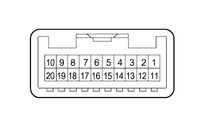

Headlight Dimmer Switch Assembly Inspection |
| 1. Inspect Headlight Dimmer Switch Assembly |
 |
Measure Light Control Switch Resistance
Using SST (Toyota electrical tester), measure the resistance between the connector terminals.
| Tester Connection (Terminal Symbol) | Condition | Standard |
|---|---|---|
| 13(T) - 19(E) | Light control switch OFF | 10 kΩ or higher |
| 11(H) - 19(E) | 10 kΩ or higher | |
| 12(A) - 19(E) | 10 kΩ or higher | |
| 13(T) - 19(E) | Light control switch TAIL | Below 1 Ω |
| 13(T) - 19(E) | Light control switch HEAD | Below 1 Ω |
| 11(H) - 19(E) | Below 1 Ω | |
| 12(A) - 19(E) | Light control switch AUTO | Below 1 Ω |
Measure Headlight Dimmer Switch Resistance
Using SST (Toyota electrical tester), measure the resistance between the connector terminals.
| Tester Connection (Terminal Symbol) | Condition | Standard |
|---|---|---|
| 14(HF) - 19(E) | Headlight Dimmer Switch FLASH | Below 1 Ω |
| 20(HU) - 19(E) | ||
| 15(HL) - 19(E) | Headlight Dimmer Switch LOW BEAM | Below 1 Ω |
| 20(HU) - 19(E) | Headlight dimmer switch HI BEAM | Below 1 Ω |
Measure Turn Signal Switch Resistance
Using SST (Toyota electrical tester), measure the resistance between the connector terminals.
| Tester Connection (Terminal Symbol) | Condition | Standard |
|---|---|---|
| 16(TR) - 19(E) | Turn Signal Switch Neutral | 10 kΩ or higher |
| 18(TL) - 19(E) | 10 kΩ or higher | |
| 16(TR) - 19(E) | Turn Signal Switch Right | Below 1 Ω |
| 18(TL) - 19(E) | Turn Signal Switch Left | Below 1 Ω |
Measure Front Fog Light Switch Resistance
Using SST (Toyota electrical tester), measure the resistance between the connector terminals.
| Tester Connection (Terminal Symbol) | Condition | Standard |
|---|---|---|
| 7(BFG) - 8(LFG) | Front fog light switch OFF | 10 kΩ or higher |
| Front fog light switch ON | Below 1 Ω |